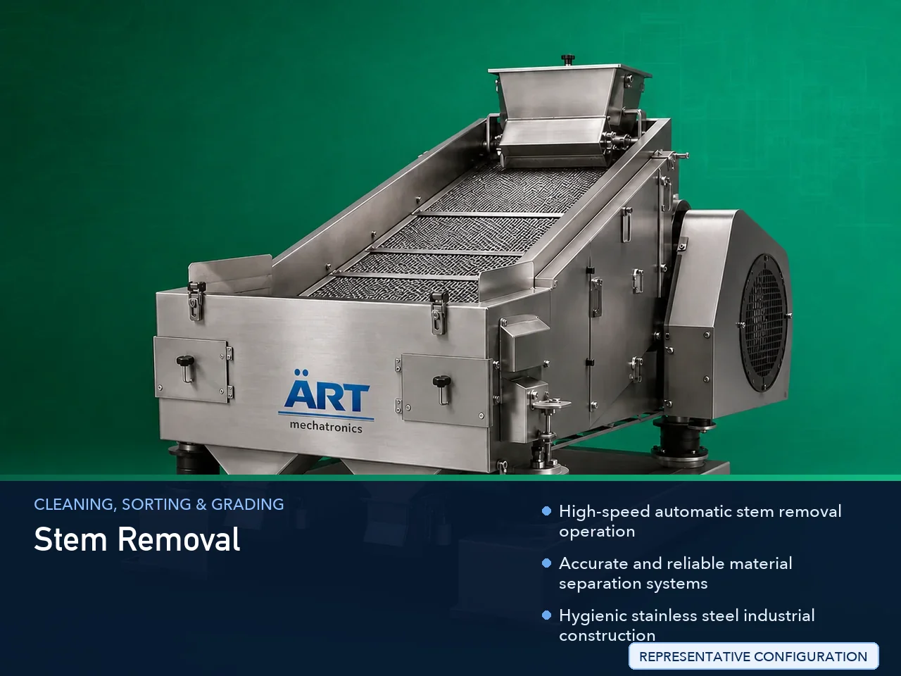

Stem Removal Machine (Industrial Destemming & Stem Separation System)
A Stem Removal Machine, also known as a Destemming Machine, Stem Separation Machine, Industrial Stem Remover, or Automatic Destemming System, is an advanced industrial processing solution designed for stem removal, leaf separation, destemming, material cleaning, fiber separation, and high-speed…

About the Stem Removal
Stem removal systems are widely used for: ✔ Tobacco stem separation ✔ Herb and leaf destemming ✔ Tea leaf cleaning operations ✔ Spice processing and stem removal ✔ Vegetable stem separation ✔ Flower and botanical processing ✔ Agro material cleaning ✔ Industrial plant material processing
The machine improves: ✔ Product purity ✔ Material quality ✔ Processing efficiency ✔ Product consistency ✔ Labor reduction ✔ Industrial hygiene ✔ Production productivity
Industrial stem removal machines use: ✔ Precision separation mechanisms ✔ Vibratory and airflow systems ✔ Rotary separation drums ✔ PLC and HMI automation controls ✔ Conveyor synchronized handling systems
to automatically separate stems and unwanted fibers with superior accuracy and high production efficiency.
Stem removal machines are widely used in industries such as:
Tobacco industries Tea industries Herbal industries Spice processing industries Food processing industries Agro industries Biomass industries Nutraceutical industries
where clean material processing, impurity removal, and high-speed production are essential.
The machine is highly suitable for: ✔ Tobacco destemming operations ✔ Herb and tea leaf cleaning ✔ Spice stem removal ✔ Vegetable and flower processing ✔ Botanical material separation ✔ Industrial agro processing systems
ART Mechatronics offers high-performance stem removal machines, engineered for continuous industrial operation, precision material separation, hygienic processing, and reliable long-term industrial productivity.
Working Principle of Stem Removal Machine
- 1. Material Feeding & Loading Raw materials are automatically fed into separation chamber for processing operation.
- 2. Stem Separation & Destemming Process Machine automatically separates stems, fibers, and unwanted particles using vibratory systems, airflow technology, and precision separation mechanisms.
Intelligent synchronization ensures smooth material handling and accurate stem removal operations.
- 3. Destemming & Cleaning Operation Machine handles processing of: ✔ Tobacco leaves ✔ Tea leaves ✔ Herbs ✔ Spices ✔ Vegetables ✔ Flowers ✔ Biomass products ✔ Agro materials
accurately and continuously.
- 4. Material Cleaning & Classification Process Machine performs: Stem removal Leaf separation Fiber separation Impurity removal Material grading Product cleaning
for efficient industrial material processing operations.
- 5. Intelligent Automation & Hygiene Integration Optional systems include: Dust extraction systems Automatic feeding systems Air filtration systems Food-grade stainless steel construction Safety guarding systems
- 6. Finished Product Discharge Processed materials discharged automatically for: Packaging operations Mixing systems Drying operations Warehouse storage Export shipment handling
Types of Stem Removal Machines
- 1. Tobacco Stem Removal Machine Designed for: ✔ Tobacco leaf destemming and processing applications
- 2. Herb & Tea Destemming Machine Suitable for: ✔ Herbal and tea leaf cleaning systems
- 3. Spice Stem Separation Machine Uses: ✔ Spice processing and impurity removal operations
- 4. Vegetable & Botanical Stem Removal Machine Designed for: ✔ Food and botanical material processing systems
- 5. Servo Driven Destemming Machine Suitable for: ✔ Precision high-speed material separation operations
- 6. Fully Automatic Stem Separation System Designed for: ✔ Complete industrial processing automation lines
Industries Using Stem Removal Machines
🚬 Tobacco Industry Tobacco leaf cleaning, stem separation, and processing systems. 🍃 Tea & Herbal Industry Tea leaf cleaning, herb processing, and botanical separation systems. 🌶️ Spice Processing Industry Spice impurity removal and industrial cleaning operations. 🍅 Food Processing Industry Vegetable cleaning, leaf separation, and food ingredient preparation systems. 🌾 Agro & Biomass Industry Agro material cleaning and biomass separation systems. 💊 Nutraceutical Industry Herbal ingredient cleaning and botanical processing systems.
Features & Advantages
✔ High-speed automatic stem removal operation ✔ Accurate and reliable material separation systems ✔ Hygienic stainless steel industrial construction ✔ PLC and automation control systems ✔ Improves product purity and processing consistency ✔ Reduces manual cleaning dependency ✔ Supports multiple agro and botanical materials ✔ Reliable long-term industrial performance ✔ Smooth integration with industrial production lines
Technical Highlights
Machine Type: Stem removal machine Industrial destemming system Material separation machine Material Compatibility: Tobacco leaves Tea leaves Herbs Spices Vegetables Flowers Agro materials Integration: Vibratory separation systems Airflow separation systems Automatic feeding systems Dust extraction systems Features: PLC control system Touchscreen HMI Stainless steel construction Material grading systems Continuous duty operation Applications: Stem removal Leaf separation Impurity removal Material cleaning Agro processing Botanical processing Automation: Semi-automatic Fully automatic industrial systems
Turnkey Destemming Solutions
ART Mechatronics offers: Complete stem removal systems Automatic destemming solutions Industrial material cleaning systems Dust handling integration systems Installation & commissioning After-sales service & AMC
Why Choose Art Mechatronics
Expertise in industrial processing and automation systems Customized destemming solutions for multiple industries High-performance and hygienic separation technology Advanced PLC and automation systems Proven industrial processing performance across sectors
Applications
Tobacco Processing Plants Tea & Herbal Processing Facilities Spice Manufacturing Units Food Processing Industries Agro Product Processing Plants Nutraceutical Manufacturing Industries
Related Cleaning, Sorting & Grading machines
Get pricing & specs for the Stem Removal
Share the product, target capacity, current process and plant location. These details help our engineers discuss the right machine or line configuration.
One partner, from design to start-up
ART Mechatronics designs, manufactures, installs and commissions your Stem Removal solution with regional presence in India, UAE and Thailand.